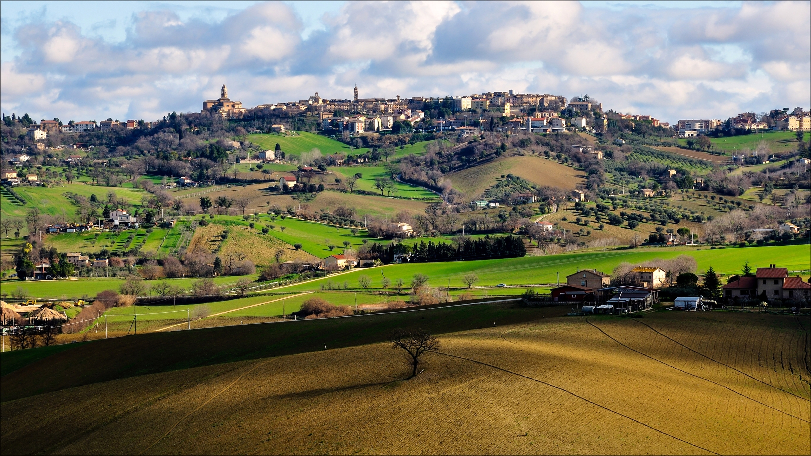
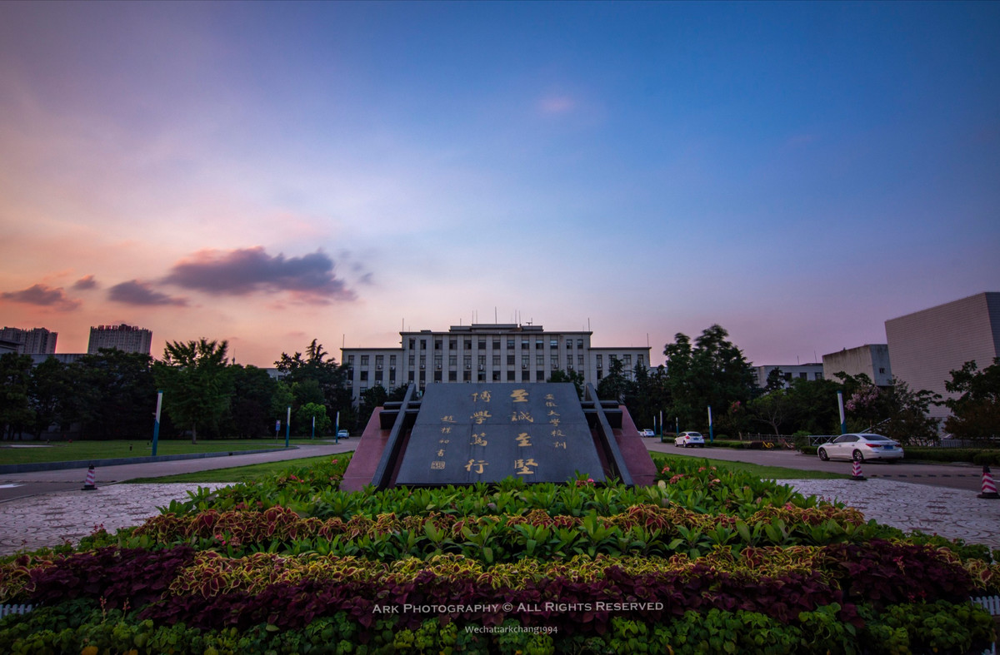

“学好一门技术的唯一方法是使用它,在使用它的过程中才能真正学会它。如果能够在使用它的过程中体会到乐趣,就是学习的最佳"状态。希望大家在学习HTML5的过程中多多练习,多敲代码一定会有回报,意想不到的收获都会在使用的过程中进发出来。”

“从小就喜欢学习,感觉自己的自学能力超强,也喜欢把自己学会的知识分享给大家。我希望自己能够成为一个好老师,把每一个同学·都教好,让他们都能有所成就。我认为一个好老师不仅要有较好的技术,也要对学生严格要求。放任不管只有部分同学能安心学习,严格要求才能保证绝大多数同学都能稳下心来好好学习。”
我的家乡
我的家乡是个美丽的城市。
我的学校
我的学校是一所很好的学校。